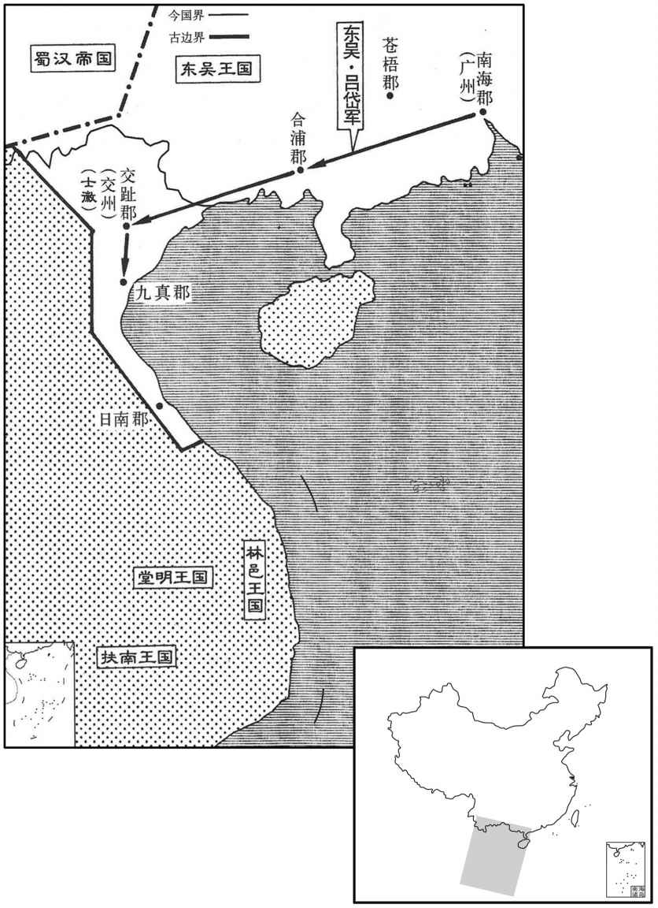

公元226年资治通鉴：本年记事、原文与白话对照
按原书编年位置阅读；追叙和史论不等于本年发生的事件。白话采用所据译本，缺译不以生成译文补齐。
卷70 · 本年记事
公元226年 · 魏世祖文皇帝黄初七年
七年〔（丙午、二二六）〕
上传原文的注释括号有异常，字符原样保留；无法可靠划分的段落默认全文显示。
本年事件索引（现代整理）
- 曹丕称赞蒋济筹划撤船有功，命其参与讨贼谋议
- 诸葛亮准备北伐，命李严移镇江州、陈到守永安
- 陆逊劝孙权增广农田，孙权表示将亲自耕作示范
- 曹丕借故处死鲍勋，群臣求情未果
- 卞太后与郭皇后力救曹洪，曹丕免其死罪并削爵
- 曹丕立曹叡为太子，命曹真、陈群、司马懿辅政后去世
- 陈寿评曹丕文才出众，惜其未能广施德政
- 曹叡即位，尊郭皇后为皇太后
- 刘晔评曹叡才略可比秦始皇、汉武帝
- 陈群劝曹叡警惕群臣结党、掩蔽是非
- 曹叡追谥甄夫人为文昭皇后
- 曹叡封皇弟曹蕤为阳平王
- 曹丕葬于首阳陵
- 孙权攻江夏，文聘坚守待援迫使吴军退兵
- 曹叡立皇子曹冏为清河王
- 司马懿击退诸葛瑾，曹真亦破吴军于寻阳
- 全琮招降山越万余人，吴国随后撤销东安郡
- 清河王曹冏去世
- 陆逊劝孙权施德缓刑、减轻赋役，孙权命其参与修订政令
- 曹叡任命魏国三公与诸军统帅，征召管宁未果
- 吕岱平定交趾士徽叛乱，改置交州并进讨九真
- 孙盛批评吕岱诱降后诛杀士徽兄弟
- 甘醴、鲩治起兵攻吕岱失败，交州再度平定

本年形势与背景参考图
春，正月，壬子，帝还洛阳，谓蒋济曰：「事不可不晓。吾前决谓分半烧船于山阳湖中，〔谓到精湖，水尽，船不得过，欲分半船也。宋白曰：楚州山阳县本射阳县地，晋义熙置山阳郡及山阳县，以境内有地名山阳，因以为名。戴延之西征记：山阳，津名。〕卿于后致之，略与吾俱至谯。又每得所陈，实入吾意。自今讨贼计划，善思论之。」
春季，正月，壬子（初十），魏文帝返回洛阳，对蒋济说：“对事情不能不弄清楚。我先前决定将一半船只毁在山阳湖中，幸亏你设法将船只解救 ，虽然在我后面，却几乎与我同时到达谯郡。还有你每次提的建议，都很合我的心意。今后征讨孙权的计划，要认真研究讨论。”
汉丞相亮欲出军汉中，前将军李严当知后事，移屯江州，留护军陈到驻永安，而统属于严。
蜀汉丞相诸葛亮准备出兵至汉中，前将军李严负责后方事务，移驻江州，留护军陈到驻军永安，归属李严指挥。
吴陆逊以所在少谷，〔少，诗沼翻。〕表令诸将增广农亩。吴王报曰：「甚善！令孤父子亲受田，车中八牛，以为四耦，〔耒广五寸为伐，二伐为耦。汉制，后稷浆甽田，以二耜为耦。注云：并两耜而耕也。〕虽未及古人，亦欲令与众均等其劳也。」
吴将陆逊因为所在地区粮谷匮乏，上表请求命令各位将领广开田地，增加粮食产量。吴王回复说：“你的建议很好。让我父子亲自下田，以八头牛犁地，四张犁耕作，虽然不及古代的帝王，也是想和大家一起劳作。”
帝之为太子也，郭夫人弟有罪，魏郡西部都尉鲍勋治之；〔汉献帝建安十八年，魏武分魏郡置东、西部都尉；后以东部都尉立阳平郡，西部都尉立广平郡，谓之三魏，皆属司州。治，直之翻；下同。〕太子请，不能得，由是恨勋。及即位，勋数直谏，〔数，所角翻。〕帝益忿之。帝伐吴还，屯陈留界。勋为治书执法，太守孙邕见出，过勋；〔见，贤遍翻。过，古禾翻。〕时营垒未成，但立标埒，〔标，表也。埒，说文曰，庳垣也；又封道曰埒。埒，龙辍翻。〕邕邪行，不从正道，军营令史刘曜欲推之，勋以堑垒未成，解止不举。〔堑，七艳翻。〕帝闻之，诏曰：「勋指鹿作马，〔用赵高事。〕收付廷尉。」廷尉法议，「正刑五岁」，〔法议，引法而议也。正，结正也。五岁刑，髡钳为城旦春。〕三官驳，「依律，罚金二斤」，〔三官，廷尉正、监、平也。驳，北角翻。〕帝大怒曰：「勋无活分，〔分，扶问翻。〕而汝等欲纵之！收三官已下付刺奸，当令十鼠同穴！」锺繇、华歆、陈群、辛毗、高柔、卫臻等并表「勋父信有功于太祖」，〔事见五十九卷汉献帝初平元年，六十卷二年、三年。华，户化翻。〕求请勋罪，帝不许。高柔固执不从诏命，帝怒甚，召柔诣台，〔召诣尚书台也。〕遗使者承指至廷尉诛勋。勋死，乃遣柔还寺。
文帝做太子的时候，郭夫人的弟弟犯法，被当时的魏郡西部都尉鲍勋治罪；太子曹丕向鲍勋请求赦免，遭到拒绝，因此对鲍勋心怀忌恨。等到即位做了皇帝。鲍勋又多次直言对谏，更使文帝恨不上加恨。魏军征讨吴国后退兵，驻扎在陈留地区。鲍勋任治书执法，太守孙邕晋见文帝，出来后，顺路去鲍勋那里拜访；当时营垒尚未筑好，刚刚立下界标，孙邕穿行，汉有起正路，军营令史刘曜要追究孙邕，鲍勋认为营垒尚未建成，劝止了刘曜，没有上所。文帝知道后，下诏说：“鲍勋指鹿为马，抓起来交给廷尉治罪。”廷尉根据法律议定，“应处五年徒刑”，廷尉正、廷尉监、廷尉平三位官员所驳说：“依照律法，只应罚黄金二斤”，文帝大为生气说：“鲍勋该处死，而你们却要放掉他，将廷尉正、监、平三官及其下属官员抓起来交给刺奸治罪，要把你们这些老鼠埋在一个坑里！”钟繇、华歆、陈群、辛毗、高柔、卫臻等人一起上表，说鲍勋的父亲鲍信有功于武皇帝，请求赦免鲍勋，文帝不许。廷尉高柔拒不服从文帝的诏命，文帝更加愤怒，把高柔召至尚书台，然后，派使者秉承旨意到廷尉监狱将鲍勋处死。鲍勋处死之后，才放高柔回廷尉官府。
票骑将军都阳侯曹洪，家富而性吝啬，〔票，匹妙翻。〕帝在东宫，尝从洪贷绢百匹，不称意，恨之；遂以舍客犯法，下狱当死，〔称，尺证翻。下，遐稼翻。〕群臣并救，莫能得。卞太后责怒帝曰：「梁、沛之间，非子廉无有今日。」〔曹洪，字子廉。洪脱武帝事见五十九卷初平元年。〕又谓郭后曰：「令曹洪今日死，吾明日敕帝废后矣！」于是郭后泣涕屡请，乃得免官，削爵土。
票骑将军都阳侯曹洪，家中富有，但很吝啬。文帝做太子时，曾向曹洪借用一百匹娟，未能满意，所以心怀忌恨。后来，曹洪宾客犯法，便将曹洪逮捕入狱，判处死刑，大臣们都为曹洪求情，仍不赦免。卞太后气愤地责备文帝：“当年在梁沛之间大战时，若没有曹洪，我们怎么会有今天。”又对郭皇后说：“皇帝今天处死曹洪，我明天就要他废掉你这个皇后！”于是，郭皇后多次哭着为曹洪求情，曹洪才免于一死，被免去官职，削去爵位和封地。
初，郭后无子，帝使母养平原王叡；以叡母甄夫人被诛，〔事见上卷元年。〕故未建为嗣。叡事后甚谨，后亦爱之。帝与叡猎，见子母鹿，帝亲射杀其母，命叡射其子；〔射，而亦翻。〕叡泣曰：「陛下已杀其母，臣不忍复杀其子。」〔复，扶又翻。〕帝即放弓矢，为之恻然。〔为，于伪翻。〕夏，五月，帝疾笃，乃立叡为太子。丙辰，召中军大将军曹宜真、镇军大将军陈群、抚军大将军司马懿，〔沈约志曰：中军将军，汉武帝以公孙敖为之，时为杂号。镇军、抚军，皆始于此。中、镇、抚三号。比四镇。晋志，诸大将军开府位从公者，为武官公，皆着武冠，平上黑帻。〕并受遗诏辅政。丁巳，帝殂。〔年四十。通鉴书法，天子奄有四海者书「崩」，分治者书「殂」。惟东晋诸帝，以先尝混一书「崩」。说文曰：殂，往死也。
两版字句有差异，建议核对原文。
当初，郭皇后没有儿子，文帝让她以母亲的名义抚养平原王曹睿，曹睿因为母亲甄夫人被杀，没有被立为太子。他谨慎侍奉郭皇后，深得郭皇后喜爱。一天，文帝和曹睿父子二人射猎，见到一只母鹿带着一只小鹿，文帝亲手射死了母鹿，要曹睿射那只小鹿，曹睿哭着说：“陛下已经杀了母亲，我不忍心再杀她的儿子。”文帝当即放下弓箭，恻然心伤。夏季，五月，文帝病重，立曹睿为太子。丙辰（十六日），召中军大将军曹真、镇军大将军陈群、抚军大将军司马懿，发布遗诏，命令他们辅佐太子曹睿主持政事。丁巳（十七日），文帝去世。
陈寿评曰：文帝天资文藻，下笔成章，博闻强识，才艺兼该。若加之旷大之度，励以公平之诚，迈志存道，克广德心，则古之贤主，何远之有哉！
陈寿评曰：文帝有文学天赋，下笔成章，博闻强记，才艺都很有造诣。如果再加以宽博旷达的气度和公平挚诚之心，激励自己维护道义的志向，尽心广布贤德恩惠，则比古代的贤明君主，也不会相差太远！
太子即皇帝位，尊皇太后曰太皇太后，皇后曰皇太后。
太子曹睿即帝位，尊皇太后卞氏为太皇太后，养母郭皇后为皇太后。
初，明帝在东宫，不交朝臣，不问政事，惟潜思书籍；〔思，相吏翻。〕即位之后，群下想闻风采。居数日，独见侍中刘晔，语尽日，众人侧听，晔既出，问：「何如﹖」：「秦始皇、汉孝武之俦，才具微不及耳。」
当初，魏明帝曹睿在东宫做太了的时候，不结交朝廷大臣，不过问政事，只是埋头读书。即位后，大臣们都想见识他的风采。过了数天，只接见了侍中刘晔，谈了一整天，其他人在外侧耳而听。刘晔出来，都问”怎么样？”刘晔说：“志向可与秦始皇、汉武帝相比，只是才智稍稍及不上。”
帝初莅政，陈群上疏曰：「夫臣下雷同，是非相蔽，国之大患也。若不和睦则有雠党，〔左传：晋郄芮曰：有党必有雠。〕有雠党则毁誉无端，毁誉无端则真伪失实，〔誉，音余。〕此皆不可不深察也。」
明帝开始主持政事，陈群上书说：“大臣随声附和，是非不分，是国家的大祸害。但是，如果不和睦相处，则又各树党羽；必然互相仇视，无端诋毁、诽谤；无端诋毁、诽谤，造成真假难辨，这些都不可以不深入考察。”
癸未，追谥甄夫人曰文昭皇后。〔甄，之人翻。〕
癸未（疑误），曹睿追谥生母甄夫人谥号为文昭皇后。
壬辰，立皇弟蕤为阳平王。〔蕤，如隹翻。〕
壬辰（疑误），立弟弟曹蕤为阳平王。
六月，戊寅，葬文帝于首阳陵。〔葬于洛阳东北首阳山，因以名陵。〕
六月，戊寅（初九），将文帝的遗体安葬在首阳陵。
吴王闻魏有大丧，秋，八月，自将攻江夏郡，太守文聘坚守。〔文聘时屯石阳。祝穆曰：魏初定荆州，屯沔阳为重镇。晋立沔阳县，江夏郡自上昶移理焉。今临嶂山在汉阳军西六十里，晋沔阳县治也，意石阳即此地。夏，户雅翻。〕朝议欲发兵救之。〔朝，直遥翻。〕帝曰：「权习水战，所以敢下船陆攻者，冀掩不备也。今已与聘相拒；夫攻守势倍，终不敢久也。」先是，朝廷遣治书侍御史荀禹慰劳边方，〔先，悉荐翻。治，直之翻。劳，力到翻。〕禹到江夏，发所经县兵及所从步骑千人乘山举火，〔乘，登也。〕吴王遁走。
吴王听说魏文帝去世。秋季，八月，亲自率军进攻江夏郡，太守文聘率兵坚守。朝廷商议派兵增援，明帝说：“孙权的军队惯于水上作战，他们如今敢于弃船从陆上进攻，不过是盼望我军没有准备。目前文聘已经据城坚守，而进攻的一方需要比防守的力量大一倍才能互相对抗，孙权终究不敢在江夏城下久留。”不久前，朝廷曾派治书侍御史荀禹慰劳边防将士，他进入江夏境，便调动所经各县的士卒，和自己的随从步、骑兵一千人，登山放火，吴王便悄悄撤走了。
辛巳，立皇子冏为清河王。
辛巳（十二日），立皇子曹为清河王。
吴左将军诸葛瑾等寇襄阳，司马懿击破之，斩其部将张霸；曹真又破其别将于寻阳。此江北之寻阳，汉故县地。
两版字句有差异，建议核对原文。
吴左将军诸葛瑾等进攻襄阳，司马懿把他击败，并斩杀了吴将张霸；曹真又在寻阳击败诸葛瑾的另一部将。
吴丹阳、吴、会山民复为寇，〔吴、会，吴郡、会稽也。会，工外翻。复，扶又翻。〕攻没属县。吴王分三郡险地为东安郡，〔三郡，豫章、丹阳、新都也。吴录曰：东安郡治富春。或曰：三郡，丹阳、吴、会稽也。项安世家说曰：丹杨，以多赤柳，在丹杨山。晋书、南史并用「杨」字。若丹阳则今江陵府枝江县，楚之始封。余按二汉志，丹阳郡，本秦鄣郡，汉武帝更名丹阳郡。若丹阳县，班志注误，诚如项氏所云。晋、宋以后，以丹阳郡为丹阳尹，治秣陵。二汉之丹杨郡，治宛陵。宛陵，晋、宋属宣城郡。治所既异汉、魏之时，自当依二汉志为丹阳郡。〕以绥南将军全琮领太守。〔绥南将军，吴所创置。〕琮至，明赏罚，招诱降附，〔诱，音酉。降，户江翻。〕数年，得万余人。吴王召琮还牛渚，罢东安郡。
吴地丹阳、吴、会三郡山民再度叛乱，攻克三郡的属县。吴王以三 郡险要山地新设东安郡，任命绥南将军全琮兼太守。全琮上任后，申明并严格执行赏罚办法，引诱、招降那些随从叛乱的人，几年间，就收纳了一万余人。吴王将全琮召回牛渚，撤销了东安郡。
冬，十月，清河王冏卒。
两版字句有差异，建议核对原文。
冬季，十月，清河王曹去世。
吴陆逊陈便宜，劝吴王以施德缓刑，宽赋息调。〔调，徒吊翻。〕又云：「忠谠之言，〔谠，音党，善言也。〕不能极陈；求容小臣，数以利闻。」〔求，犹乞也。数，所角翻。〕王报曰：「书载『予违汝弼』，而云不敢极陈，何得为忠谠哉！」〔舜曰：予违汝弼，汝无面从，退有后言。谠，音党。〕于是令有司尽写科条，使郎中褚逢赍以就逊及诸葛瑾，意所不安，令损益之。
吴陆逊对有利于国家的措施提出建议，劝吴王广施德政，缓和刑罚，放宽赋税，免征徭役。又说：“忠诚善良的建议，不能彻底向君王陈述；取悦君王的小臣，才反复以小利上奏。”回复说：“《尚书》上记载：‘我不错误，你要帮我改正’。你在信中不敢彻底陈述，怎么能称作忠心善良呢？”于是命令有关人员，把将要实施的条款拟好，派郎中令褚逢带给陆逊和诸葛瑾，让他们对其中的不妥之处进行删改或增添。
十二月，以锺繇为太傅，曹休为大司马，都督扬州如故，晋志曰：黄初三年，始置都督诸州军事。曹真为大将军，华歆为太尉，王朗为司徒，陈群为司空，司马懿为票骑大将军。〔华，户化翻。票，匹妙翻。〕歆让位于管宁，帝不许。征宁为光禄大夫，敕青州给安车吏从，以礼发遣，〔宁，北海朱虚人，青州所部。从，才用翻。〕宁复不至。〔复，扶又翻。〕
两版字句有差异，建议核对原文。
十二月，魏明帝任钟繇为太傅，曹休为大司马，仍然负责扬州方面的军务。任曹真为大将军，华歆为太尉，王朗为司徒，陈群为司空，司马懿为票骑大将军。华歆要将职位让给管宁，明帝不同意。征调管宁为光禄大夫，给管宁所在青州的官府下达命令，要他们以对待朝廷大臣的礼仪，用可坐乘的安车并派官吏将管宁护送到都城，但是管宁仍不应召。
是岁，吴交趾太守士燮卒，吴王以燮子徽为安远将军，领九真太守，以校尉陈时代燮。交州刺史吕岱以交趾绝远，表分海南三郡为交州，以将军戴良为刺史；海东四郡为广州，岱自为刺史；〔海南三郡，交趾、九真、日南也。海东四郡，苍梧、南海、郁林、合浦也。〕遣良与时南入。而徽自署交趾太守，发宗兵拒良，〔自汉末之乱，南方之人率宗党相聚为兵以自卫。〕良留合浦。交趾鲩邻，〔【章：甲十六行本「鲩」作「桓」；乙十一行本同；孔本同；熊校同；下同。】〕燮举吏也，叩头谏徽，使迎良。徽怒，笞杀邻，邻兄治合宗兵击，不克。吕岱上疏请讨徽，督兵三千人，晨夜浮海而往。或谓岱曰：「徽藉累世之恩，为一州所附，未易轻也。」〔易，以豉翻。〕岱曰：「今徽虽怀逆计，未知吾之卒至；〔卒，读曰猝。若我潜军轻举，掩其无备，破之必也。稽留不速，使得生心，婴城固守，七郡百蛮，云合响应，虽有智者，谁能图之！」遂行，过合浦，〔过，工禾翻。〕与良俱进。岱以燮弟子辅为师友从事，〔师友从事者，署为从事，而待以师友之礼。〕遣往说徽。〔说，输芮翻。〕徽率其兄弟六人出降，〔降，户江翻。〕岱皆斩之。
两版字句有差异，建议核对原文。
这一年，吴交趾太守士燮去世，吴王任命士燮的儿子士徽为安远将军，兼任九真太守，以校尉陈时接任士燮的交趾太守职位。交州刺史吕岱认为交趾太遥远，上表请求将海南三郡划归交州，由将军戴良任刺史；海东四郡设立广州，吕岱为刺史；派戴良和陈时南下。而士徽自封为交趾太守，率自己的宗族的军队抗拒戴良，戴良在合浦停留。交趾人柏邻，以前经士燮推荐在郡中作吏员，叩头劝士徽迎接戴良来交趾上任。士徽大怒，将柏邻活活打死，柏邻的哥哥柏治召集自己的宗族士兵进攻士徽，未获成功。吕岱上书请求征讨士徽，他指挥三千士兵，日夜兼程，渡海前往。有人对吕岱说：“士微凭借他家几代对交趾人的恩德，为一州人所归附，不可轻视。”吕岱说：“现在士徽虽然图谋不轨，却不知我已迅速到达这里；如果我隐蔽行动，轻装出发，突然打他个措手不及，必定一举获胜；假如我行动国迟缓，使他产生疑心，绕城固守，七个郡的上百个蛮族部落，群起响应即使有才智很高的人，谁又能够谋取他呢！”于是下令行动，过合浦时，与戴良联合进军。吕岱以士燮的侄子士辅为从事，待以师友之礼，派他前去劝士徽投降。士徽领兄弟六人出降，吕岱把他们都斩首了。
孙盛论曰：夫柔远能迩，莫善于信。吕岱师友士辅，使通信誓；徽兄弟肉袒，推心委命，岱因灭之以要功利，〔要，读曰邀。〕君子是以知吕氏之祚不延者也。〔吕岱子孙无闻。〕
孙盛论曰：安扶边远地区的人，亲近他们，最好的办法是讲信义。吕岱以师友之礼对待士辅，要他信誓旦旦地去劝降士徽，士徽兄弟坦露臂膀，表示投诚，吕岱却为邀功名、谋私利将他们杀害，明智的人由此可知吕氏为什么没有后代延续下来。
徽大将甘醴及鲩治率吏民共攻岱，岱奋击，破之。于是除广州，复为交州如故。岱进讨九真，斩获以万数；又遣从事南宣威命，暨徼外扶南、林邑、堂明诸王，各遣使入贡于吴。〔扶南在海大湾中，北距日南七千里。林邑国本汉象林县地，直交趾海行三千里。堂明即道明国，在真腊北。徼，吉吊翻。〕
士徽的大将甘醴及柏治率领交趾的官员和百姓共同攻击吕岱，吕岱奋力抵抗，才将甘醴等人击败。于是又撤销广州，恢复原来的交州建置。吕岱进军九真，杀死和俘获近万人；又派从事向南深入，传布吴王的声威，促使境外扶南、林邑、堂明的各王，分别派使臣向吴进贡。
原书衔接
烈祖明皇帝上之上〔讳叡，字符仲，文帝长子也。谥法：照临四方曰明。〕